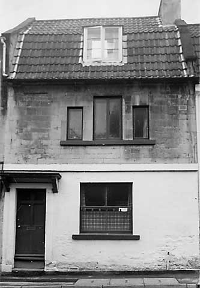

Type of building:
Mid mixed terrace house
Listing:
Grade ll
Plan and elevation:
Double pile, single fronted. 2-storey with attic and cellar.
Summary of the probable main building
history:
Mid to late 18th Century.

North elevation
Exterior:
North elevation - coursed and squared Bath stone, painted at ground floor level.
Tiled `M' mansard (gabled gambrel) roof with coped raised verges and later inserted
dormer window at attic level. A squared headed 1-2-1- light Venetian style window
at first floor level. Sash window on the ground floor but scars of an earlier
larger window evident. First floor has a string course. Six panel door to left
under a moulded flat stone hood supported by scrolled moulded brackets. Dressed
stone door surround, ovolo and ogee moulded with run-out stops. Ashlar stack on
right gable end. Rear (south) elevation - coursed rubble stone with dressed stone
quoins.
Interior:
A `designed' house with regularly arranged rooms and spacious staircase well rising
in the south east angle. Tongued and grooved rear and attic doors; other surviving
doors are four bevelled panelled. Beaded wood door frames. Fireplaces with beaded
stone surrounds on all levels arranged against west gable end; attic fire surround
has a panelled lintel. Plaster ceiling coving in ground floor rear room and first
floor front room. The front ground floor room has a sealed serving hatch overlooking
the principal entry passageway and internal evidence that the window overlooking
the road was once of shop front size. Information from the owner and physical
evidence on the east gable wall indicates the former existence of interconnecting
doors with the neighbouring property to the east with one door at each level.
The roof space has been opened up to provide more attic head space. Plaster board
covering preclude certainty as to jointing methods but appears to be a butt purlin
structure with collars and a diagonally set ridge piece supported by yokes. A
carpenters mark survives.
Date & development:
The two pile design, `M' shaped mansard roof, door and fire surrounds and window
features point to a mid to late 18th Century construction date. The property deeds
trace title to 1782. Nevertheless, the house was probably built some twenty years
or so earlier. Evidence of the quoins indicates that the property was once detached
with the east and west neighbouring properties being built subsequently although
the building of the western neighbour must have followed very soon after (see
BE 005). The property is little altered since its first building except for the
possible removal of the original window and its replacement with a shop window,
presumably in the 19th Century or early 20th Century which, in turn, subsequently
replaced with the present window.
Ownership / occupation:
The Tithe Map records Maria Garraway as the owner in 1840. She also owned
the adjoining eastern property. The 1841 Census returns shows the property
in the occupation of James James, baker. Maria Garraway is shown as a
shopkeeper and, more specifically by the 1851 Census, as a grocer, in
occupation with her three adult children; the second son being described
as a baker. The Garraway family added a Post Office to the business and
the property remained as such, at least until 1881, under Robert Bence
before he re-sited the business.
Owners/occupiers 1782-1944. BE 006 and its eastern neighbour
| Year | Owner or occupier | Source |
| Pre-1782 | Charles Fisher | 1944 conveyance |
| 1782 | Giles Tyley & William Elkington | ditto |
| 1840 | Maria Garraway owned BE 006 let to James James, baker, & other property occupied by herself |
1841 Census 1840 Tithe Map |
| 1851 | Ann Stevens (nurse). Sub tenant? Maria Garraway (age 65, Grocer) William (son, age 32, letter carrier) John (son, age 26, baker) Matilda (daughter, age 23) (all children unmarried) |
1851 Census |
| 1861-1866 | Miss Matilda Garraway, Postmistress John Garraway, baker |
Kelly's |
| 1872 | Miss Alice Jane Garraway, Sub-postmistress | ditto |
| 1875-1923 | Robert Bence, Grocer & Post Office (photo in Batheaston Society Archives c.1890 with Bence outside his shop on a new site) |
ditto |
| 1927 | Arthur Bence, Grocer & Post Office, on the new site but BE 006 let to: | |
| 1923-1935 | Robert Hollerhead, Little Wonder Refreshment Rooms | ditto |
| 1929 | Arthur Percival Bence conveyed both properties to Robert John Hollerhead and Edith May Willis Hollerhead | 1944 deed |
| 1944 |
Edith Hollerhead (Robert d. 1939) conveyed BE 006 to Alfred Earle
Buckland, boot repairer, and Agnes May Buckland Edith Hollerhead but retaining the other property |
1944 deed |
References and bibliography:
- Copy title deeds in the possession of the owner
- Batheaston Tithe Map & Apportionment Schedule, 1840 Somerset
Record Office
- Microfiche Census Returns, 1851-1881, and Trade Directories Bath
Public Library
Survey Drawings
| Ground
Plan |
Cellar
Plan |
Section |